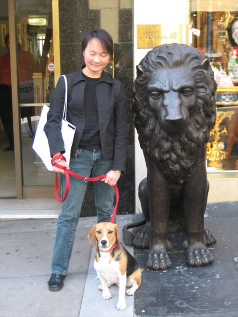

<--Previous Up Next-->

Social climbing
Earlier that day Huxley and Dave saw a marvelous, zany street opera about San Francisco history. We then joined Penny for lunch on Belden Place. Afterwards, in a neighborhood of ghastly bric-a-brac near the Chinatown gate, Huxley was terrified by this bronze lion. Being on the end of his leash, he stuck around long enough to discover that it posed no threat.